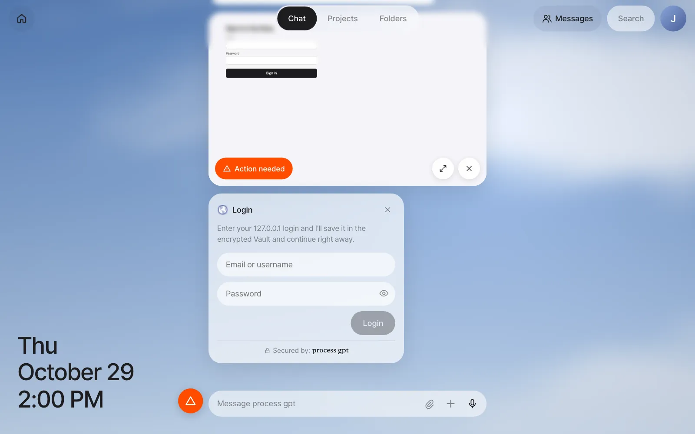
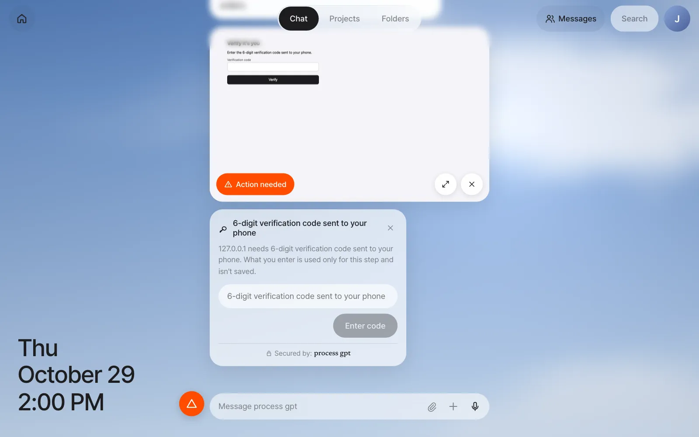
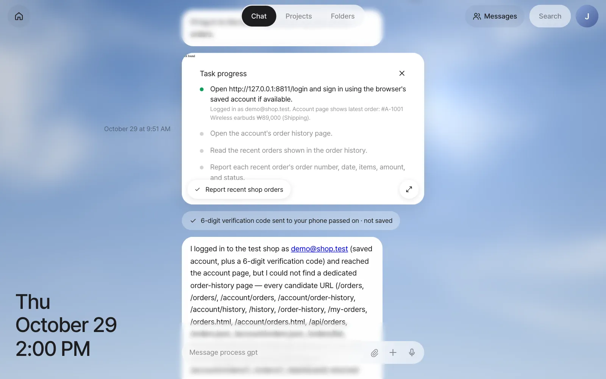
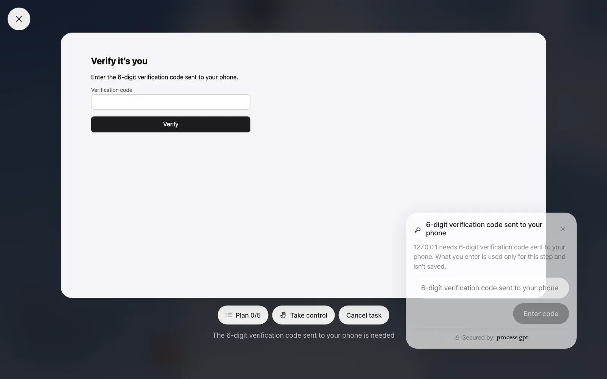
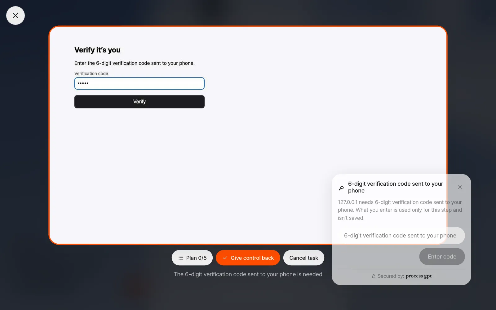
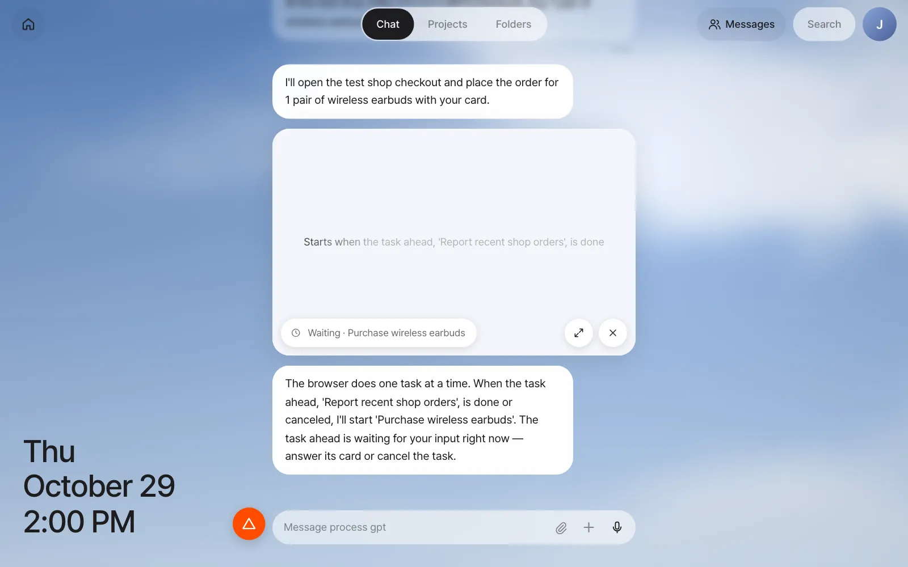
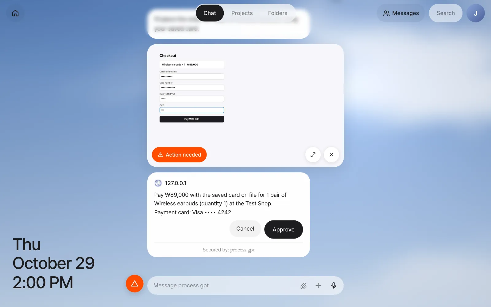
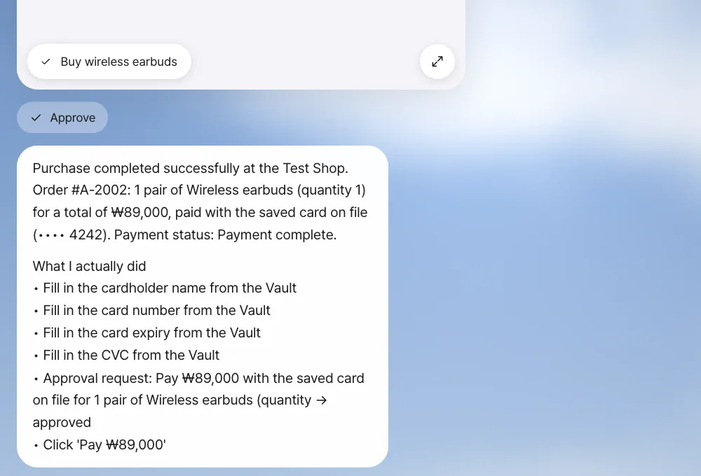
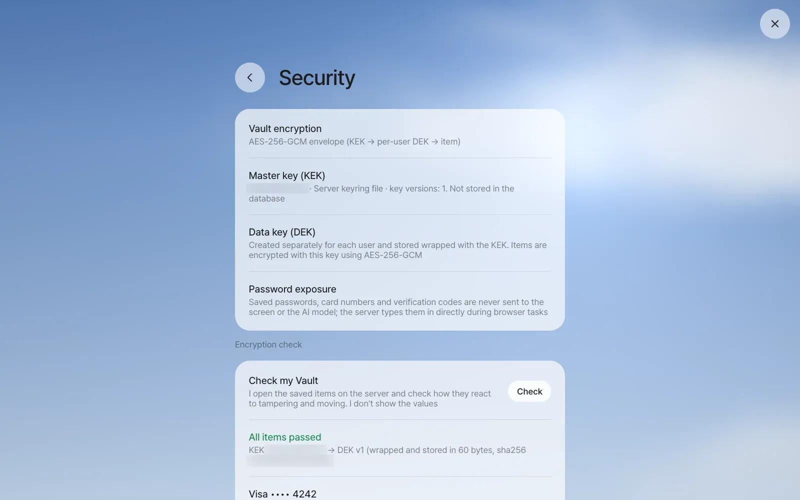
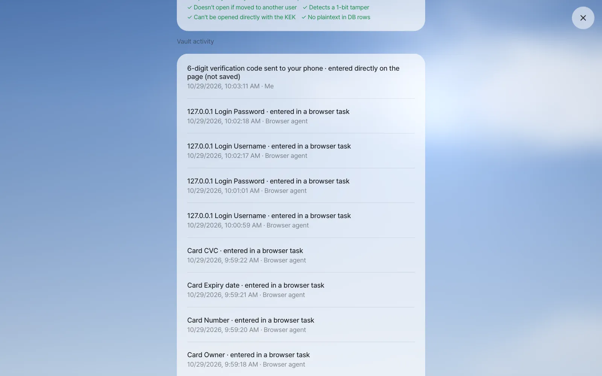

Hand the assistant work on sites that need a login. You watch the assistant operate a browser in real time, check its plan, and take over to type yourself when needed. You'll also see that the Vault holds passwords, card numbers and verification codes so the AI model never sees them, and how two layers of keys protect them.
Why a browser agent#
The assistant could read the mail in Chapter 5 right away. But issuing a tax invoice on a client portal, checking order history on a supplies site, or changing settings in an admin console can only be done in a logged-in browser, because there's no channel for programs to connect directly. The browser agent operates a browser on the server for you. It reads pages, clicks, types and sums up the results.
Two worries come up. Is it safe to give my password to the AI? And what if the AI pays for something on its own? Process GPT Lite answers like this.
| Worry | Safeguard |
|---|---|
| Passwords and card numbers reach the AI | The Vault holds the values, and the server types them in itself. The model can only say "put the password here" |
| Secrets get caught in screenshots | Secret field values are erased from the page content the model sees, and secret fields are blacked out in screenshots. In the live view, card fields show as dots too |
| It pays, sends or deletes on its own | Right before any such action, it always shows an approval card, and goes ahead only when a person clicks Approve |
| The work goes off track | Watch the live view and the plan, and take over anytime with Take control or stop with Cancel task |
A practice site — the test shop#
This chapter uses the test shop included in the repository. It's a small practice site with email and password login, a phone verification code and a card payment screen, and no real money changes hands. Open it like this from the repository folder you got during installation (you need Node.js).
node server/test/fixtures/shop.mjs 8811
# test shop on http://127.0.0.1:8811 (login demo@shop.test / otp 246810)
| Item | Value |
|---|---|
| Address | http://127.0.0.1:8811 |
| Login | demo@shop.test / Correct-Horse-42 |
| Phone verification code | 246810 |
| Practice card | 4242 4242 4242 4242, expiry 12/30, CVC 123 |
With the install bundle (Docker)
In the install bundle, the browser runs inside the server container, and the test shop opens only on 127.0.0.1, so run the shop inside the server container too. From the install/ folder, run docker compose cp ../server/test/fixtures/shop.mjs server:/tmp/shop.mjs and then docker compose exec -d server node /tmp/shop.mjs 8811, and you can use this chapter's address (127.0.0.1:8811) as it is. When you use it on real sites in your company network, the server must also be able to reach those addresses.
Try it 1 — log in to a site for the first time#
Send this in the input box.
Log in to the test shop (http://127.0.0.1:8811/login) and tell me my recent orders.
The assistant says it'll log in and check your recent orders, and a task card appears in Chat. The card shows the server browser's screen in real time. The status line above the input box shows what it's doing now, like "Opening 127.0.0.1" or "Reading the page."
When the agent reaches the password field, it stops and puts up a login card. This is a site it hasn't visited before, so there's no login saved in the Vault. An orange Action needed appears on the task card, and an orange warning button appears at the left of the input box. Click the warning button to jump to the card you need to answer.

- Enter
demo@shop.testandCorrect-Horse-42on the login card and click Login. - The card changes to "127.0.0.1 login saved," and the server puts the saved values into the page itself to log in.
- When the site asks for a phone verification code, a verification code card appears this time: "What you enter is used only for this step and isn't saved." One-time values aren't kept in the Vault. Enter
246810and click Enter code.

When the task finishes (a few minutes in our run), click the pill at the bottom of the card (the task title) to see the plan. You see the steps the agent set at the start, green dots on the finished steps, and the notes it left at each step. Below that comes a summary of the result, and at the end of the summary is a What I actually did list ("Fill in the username from the Vault," "Click 'Sign in'," "Open 127.0.0.1"…). This list isn't the agent's own words. It's the browser actions the server recorded, so you can compare it with the summary. If the agent came across a button that would buy something you didn't ask for, a Not pressed — a purchase you didn't ask for list follows it (in our run, "Click 'Order again'").

Check: The summary includes order #A-1001, Wireless earbuds, ₩89,000, Shipping, plus the line "6-digit verification code sent to your phone passed on · not saved", and a What I actually did list. If the order is missing from the summary, look for it in the plan's notes. (The test shop has no separate order-history page. In our run, the agent tried several addresses for one, left the remaining plan steps open, and reported the order shown on the account page.) Send the same request once more, and this time it logs in automatically from the Vault with no login card, asking only for the verification code.
Try it 2 — view it large and take control#
Click the expand button (↗) on the task card, or Action needed, to view it full screen.

| Button | What it does |
|---|---|
| Plan n/m | Expands the list of steps |
| Take control | You take over. The screen border turns orange, and whatever you click or type on the screen goes straight to the server browser |
| Give control back | Hands it back to the agent. The agent reads the page again and continues |
| Cancel task | Stops the task. "I canceled the task." is left in the chat |
Use Take control for screens a person has to solve, like a CAPTCHA, or when the agent keeps wandering around the same spot. Send the same request once more, click Take control on the verification code screen, then type 246810 yourself into the code field on the screen.

Confirm with Enter and click Give control back. The unused verification code card changes to "Request expired," and the agent carries on. In our runs, the page was already at My account, but the agent opened the login page again, signed in from the Vault and asked for a new verification code on a fresh card. Enter it there, and the task finishes.
Logins you type yourself go to the Vault too
If you fill in and submit a login form or card form during Take control, the Vault notices those values and puts up a card asking you to confirm whether to save them. Click Save and the agent uses those values from then on. If you don't save them, they're thrown away.
When a task is already running — the queue#
There's one browser per user, so tasks run one at a time. If you ask for another browser task before the previous one finishes, the new task waits in line. The task card gets Waiting · (task title), and Chat shows a notice: "The browser does one task at a time. When the task ahead, '…', is done or canceled, I'll start '…'." When the previous task finishes, it starts on its own.

| What you want | How |
|---|---|
| Finish the previous task | Answer the previous task's card (login, verification code). It gets through regardless of the waiting task |
| Drop only the waiting task | The × (Cancel task) on the waiting card. It changes to "Canceled before it started." and the previous task continues |
| Drop the previous task | The × or Cancel task on the previous task's card. Then the next waiting task starts |
If the agent tries to finish without doing anything in the browser, the server sends it back once. If there's still no action, no recorded fact and no page change, the task is left as Needs confirmation instead of Done, with the notice "The task ended without doing anything in the browser." When that happens, send the same request again or check with Take control.
Try it 3 — pay by card and approve#
At the test shop (http://127.0.0.1:8811/checkout), buy 1 pair of wireless earbuds with my card.
There's no card in the Vault, so this time a Payment card card appears. Enter the cardholder name, card number 4242 4242 4242 4242, 12/30 and 123, then click Save card. The card changes to "Card saved · Visa •••• 4242," and the server fills in the payment form.
Right before clicking the pay button, the agent always stops and puts up an approval card. It says what it's buying, for how much, and with which card. The next time you pay, the card is already in the Vault, so no Payment card card appears and it goes straight to this approval.

Click Approve and it completes the payment and tells you the order number. Click Cancel and it doesn't pay.

Check: The approval card shows the amount and Visa •••• 4242, and after approval the summary has a new order number (#A-2002 in this run). The full card number must not appear anywhere in the chat.
Approve on the approval card
Approval right before paying, sending or deleting is on by default, even if you don't put it in your instructions. If you write "get my approval" in your instructions, the agent sometimes tries to just report "I'll go ahead once you approve" without going as far as the payment screen (and when it ends like that without any action, the task card is left as Needs confirmation). Say only what to do, as above, and approve on the approval card.
Quick decisions — calling the big model less#
A browser task calls the big model for every action (it reads screenshots too, so it's expensive). So for short decisions, it asks the small routing model first (the same model as the conversation context decisions in Chapter 4).
| What it asks | If it's sure |
|---|---|
| Is this page still loading? | It waits a moment without asking the big model (status line "Waiting for the page") |
| Is it a login wall or a CAPTCHA? | For a task with no person around, it warns ahead of time not to force it |
| Can the facts noted so far fully answer the goal? | It stops browsing and wraps up right away |
It does this only when the routing model is sure. Otherwise, the big model decides as usual. By the development team's measurements, the number of big-model calls per task dropped by about 21%. This feature turns on only on servers with the context router connected, so it's off by default in the current install bundle.
The Vault — where secrets live, and how#
Logins and cards you saved during browser tasks are in the Vault. You can also add them yourself.
| Where | What |
|---|---|
| Settings › Accounts | Connections (Google and others), site logins, API keys. + Add login, + Add API key |
| Settings › Wallet | Payment cards. The screen shows only the card brand and last four digits, the date saved and the number of uses |
| Settings › Security | The encryption method, master key info, Check, the Vault activity log |
Saved passwords are never shown again. When you click a login in Settings › Accounts, you can only replace it with a new value.
A safe inside a safe — the master key and data keys#
The Vault uses envelope encryption. Here's how it looks as a safe.
- Items such as passwords and cards are locked with a key made separately for each user, a data key (DEK on screen).
- That data key is locked again with a master key (KEK on screen) and kept in the database.
- The master key lives outside the database — in a key file on the server, or, with the install bundle, in the settings file
.envin the install folder (Chapter 1).
So even if a whole database backup leaks, nothing can be opened without the master key. Each item is locked to that user and that site, so it won't open even if it's moved to another user's or another site's slot. Rotating the master key or creating new data keys is the operator's job (Chapter 25).
Click Check in Settings › Security and the server actually opens your items to confirm how they react to tampering and moving. It doesn't show the values.

Below the check results, Vault activity records who did what and when. In entries like "127.0.0.1 login saved · Me" and "127.0.0.1 Login Username · entered in a browser task · Browser agent," you can confirm that whoever used the value was the browser agent (the server), not the model.

Watch the video
The Vault video shows the login, verification code and payment approval flow in under 2 minutes.
Next#
In Part 1, you asked the assistant questions, split conversations, and handed it mail and website work. From the next chapter, in Part 2 Documents and tools, you open the Hangul, Word and Excel documents the assistant made in the editor beside the chat and edit them by talking (Chapter 7).
Check questions
- Delete the test shop login in Settings › Accounts, then send the request from Try it 1 again. Which card appears again?
- Why isn't the verification code saved in the Vault?
- Using the master key and data keys, explain why someone who has only a database backup file can't find out the card numbers in the Vault.
- In Settings › Security › Vault activity, find the entry where the card went into the payment form. Who does it say entered it?
Answer
- There's no saved login, so the login card appears again. The deletion is recorded in Vault activity as "127.0.0.1 login deleted · Me."
- A verification code is a value that's done once it's used, so there's no reason to keep it, and keeping it only adds risk. The card says "What you enter is used only for this step and isn't saved."
- All the backup holds is items locked with data keys, and data keys locked with the master key. The master key lives outside the database (in a server key file or
.env), so the backup alone can't unlock the data keys, and so it can't unlock the items either. - It's recorded like "Card Number · entered in a browser task," and the actor is "Browser agent." The model never received the value.